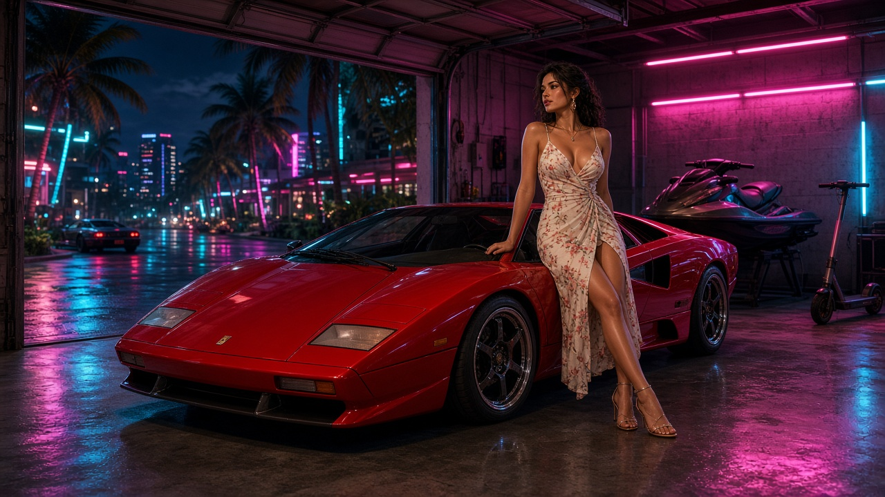

GTA 6 apps and perks
What Does GTA+ Include in GTA 6? | Peekhole

Short answer: GTA+ now covers GTA 6 as well as GTA Online. For $8 a month you get a free supercar and garage, transit perks, 10% off at many shops, and more cash when you sell cars. That's according to GameSpot's breakdown of Rockstar's announcement.
Do pre-order players get it free?
Yes, one month. If you pre-ordered GTA 6, GameSpot says you get a month of GTA+ automatically.
What's the free car?
A '90 Annis Venturas Blvd Elegy supercar, plus a single-car garage in Crosstown with a weapon locker and a spot to fence stolen goods. It unlocks after you finish Chapter 3.
What are the phone app and transit perks?
Premium on the in-game RydeMe rideshare app, Scooter Bros Premium, free scooter, bike and Seashark rentals, and free rides on Leonida public transit. Yes, Vice City has its own fake Uber, and now you can flex the premium tier.
What else?
10% off at weapon and clothing stores, hairdressers, tattoo parlors, mod shops and more, plus 10% extra cash when you sell an eligible vehicle.
What if I cancel?
The perks only work while you're subscribed. Cancel and they switch off, per GameSpot.
Sources
Peekhole take: A monthly subscription for VIP perks and a shiny ride? Rockstar basically made the OnlyFans of getaway cars. We respect the hustle.